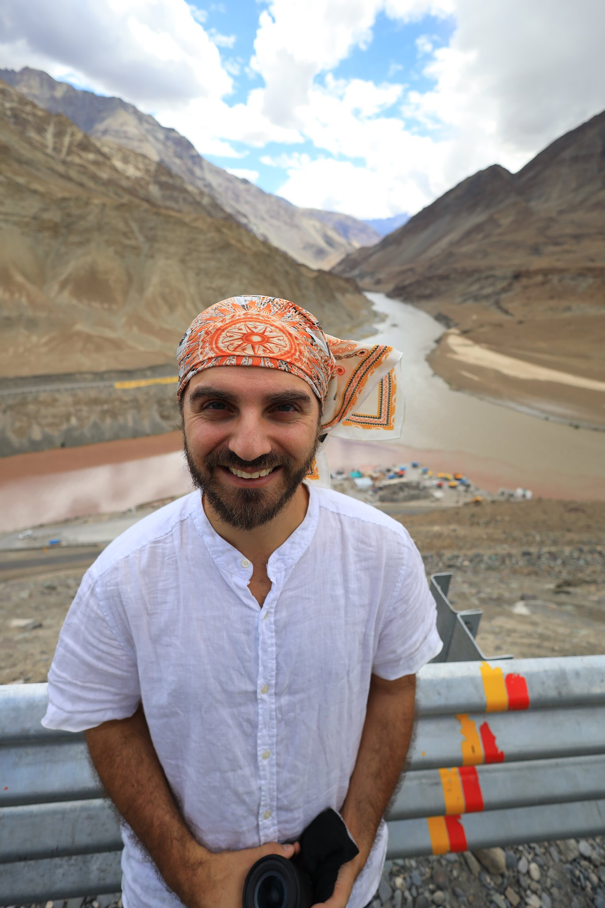
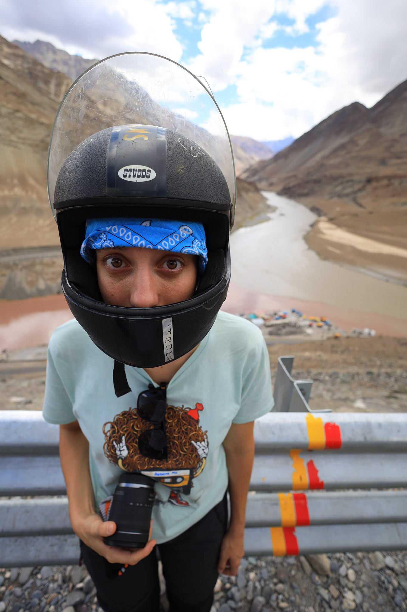
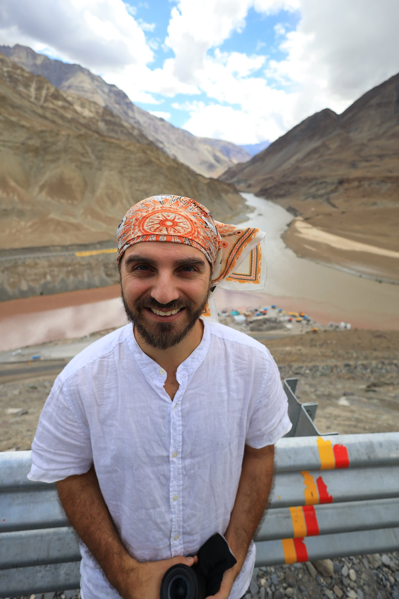
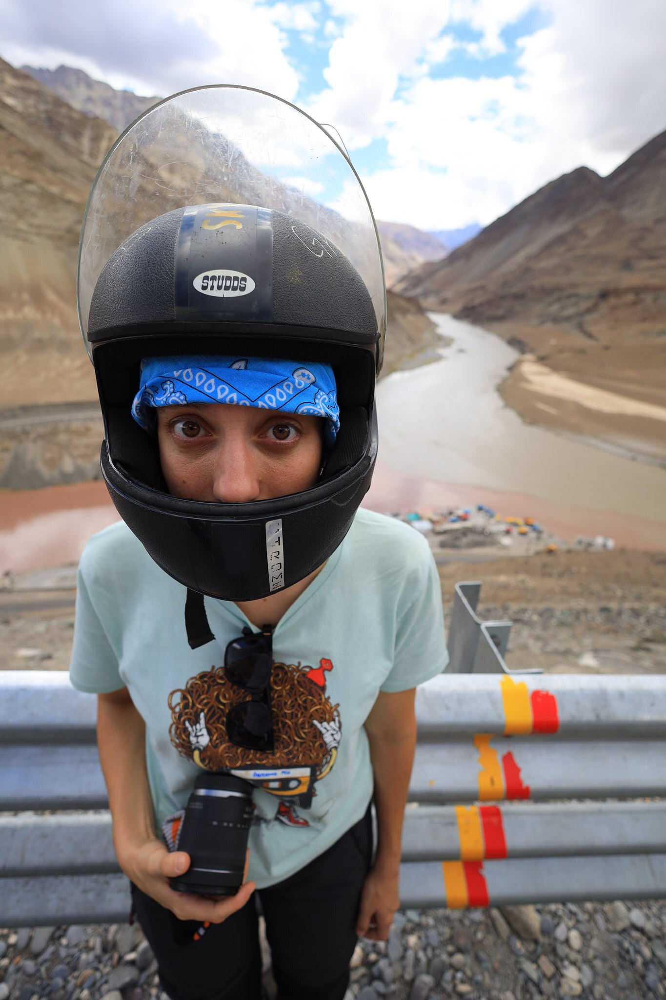

Elio & Marti
Due cuori e Una Capanna
Sabato 5 Luglio 2025, ore 17:00
Castelletto San Giovanni, Zibido San Giacomo, MI

Sabato 5 Luglio 2025, ore 17:00
Castelletto San Giovanni, Zibido San Giacomo, MI
Siamo felicissimi di invitarvi al nostro matrimonio. Di seguito troverete tutte le informazioni utili per raggiungere la cerimonia e festeggiare con noi.
Sabato 5 Luglio 2025, ore 17:00
Castelletto San Giovanni
Via Giacomo Matteotti, 24, Zibido San Giacomo, MI
Per la nostra luna di miele abbiamo scelto l'Australia del Nord, tra paesaggi selvaggi e natura incontaminata. Non vediamo l'ora di condividere con voi ogni dettaglio di questa fantastica avventura!

Se volete contribuire al nostro viaggio di nozze, potete farlo tramite bonifico:
INTESTATARIO: Elio Errico
IBAN: IT70M0306967684511787298003
Grazie di cuore a tutti!
♥

 


